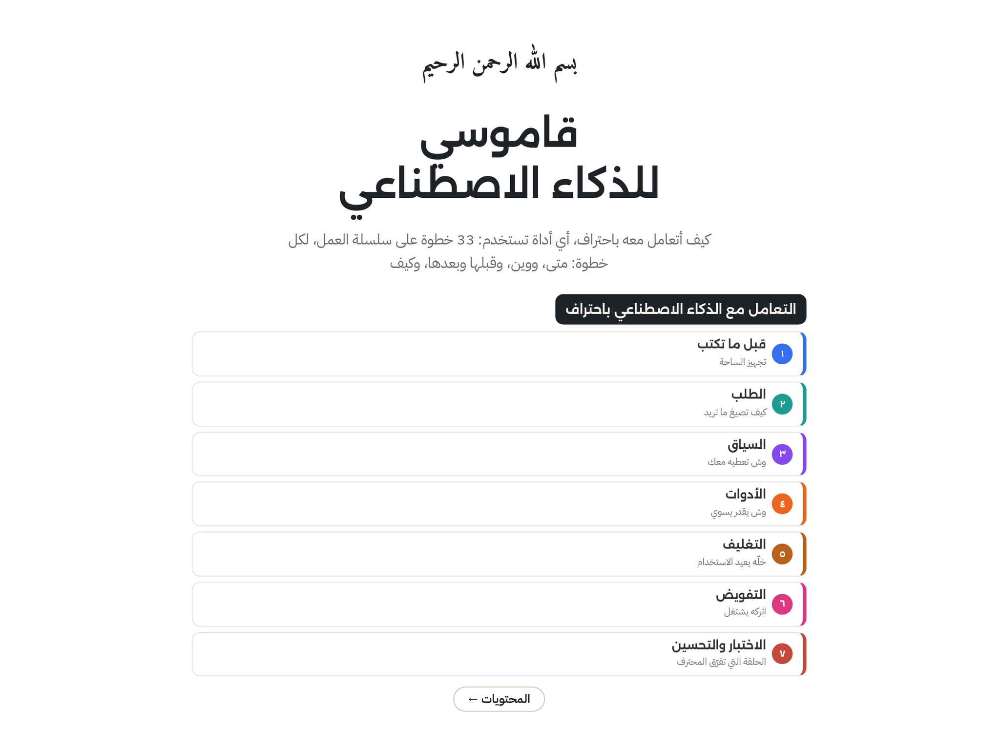

قاموس للذكاء الاصطناعي
33 خطوة على 7 مراحل، و14 مصطلح «تحت الغطاء» — Claude وClaude Code وChatGPT
إعداد: معاذ الجهني · @mfqa_الترخيص: CC BY-NC-ND 4.0

33 خطوة على 7 مراحل، و14 مصطلح «تحت الغطاء» — Claude وClaude Code وChatGPT
إعداد: معاذ الجهني · @mfqa_